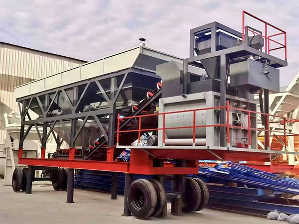
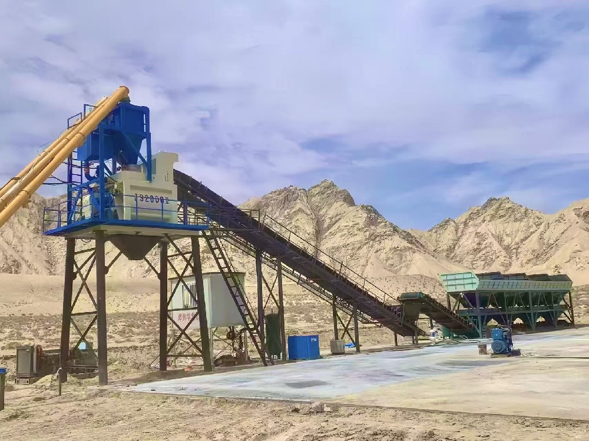
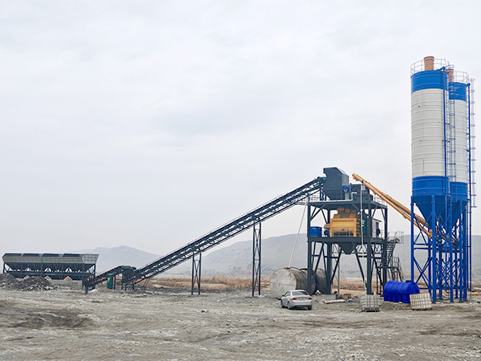

Примеры установок и поставок бетонных заводов YUDA по всему миру.

Контракт подписан в июле 2026 г. Полная холодоустойчивая комплектация с системами обогрева и зимними компонентами. Железнодорожная доставка через коридор Алашанькоу/Хоргос. Монтаж запланирован на IV квартал 2026 г.

В эксплуатации с апреля 2026 г. Обеспечивает бетоном местные инфраструктурные и строительные проекты. Система автоматического управления PLC с точным дозированием. Включён полный пакет послепродажного обслуживания.

В эксплуатации с августа 2025 г. Обслуживает региональные строительные проекты вдоль Экономического пояса Шёлкового пути. Стабильная работа в условиях засушливого климата. Заказчик отмечает высокую надёжность оборудования.
YUDA готов к вашему следующему проекту. Расскажите нам о своих требованиях.
Начать проект →